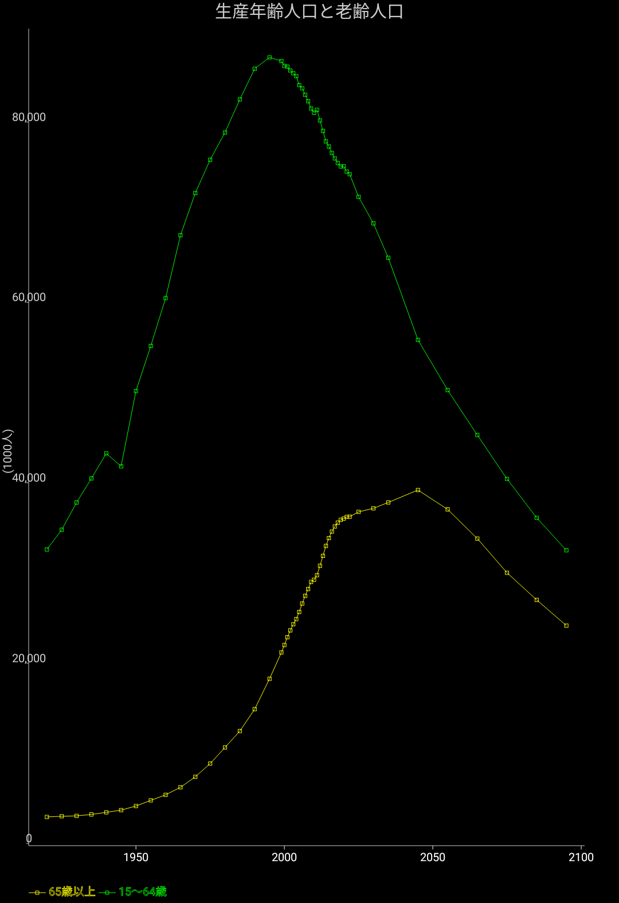

人口動態、老齢人口と生産年齢の比較

15歳から64歳までの人口と、65歳以降人口をプロットします。2025年以降は予測値です。
日本は高齢化社会が来ると言われていますが、その様子を見てみましょう。
生産年齢人口は1995年の8716万人をピークに、既に減少に向かっています。
老齢人口は2045年がピークとなっています。
ざっと見た印象では、老齢人口の減少速度と生産年齢人口の減少速度がだいたい一致するのは2060年頃になります。
社会問題としての高齢化社会は2060年あたりまでを考えるのが一般的な理由が分かります。
良かったらxlim=c(1995, 2065)をplotに足した結果も見てみて下さい。